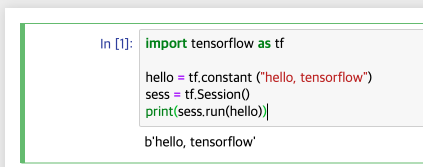
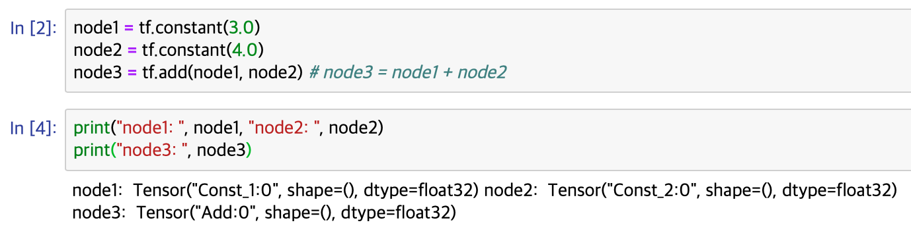
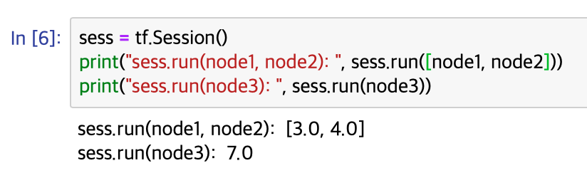
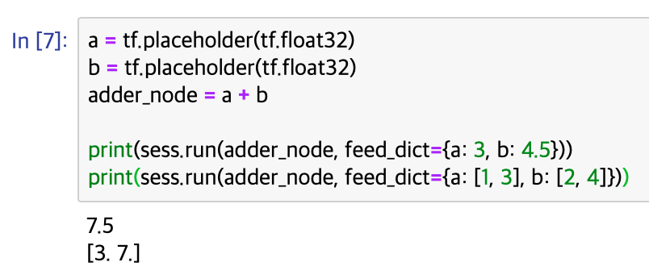

Mogaco
Machine learning basic concepts && tensorflow
Machine learning 기본 개념
개발자가 모든 경우를 생각한 프로그래밍 : explicit Programming
but, 규칙이 복잡한 explicit programming은 개발하기 어려움.
Arthur Samuel(1959) : 프로그램이 그 자체로 어떤 데이터를 보고 스스로 학습을 하면 어떨까?
Supervised learning : labeled examples
- ex) 1~10까지의 사진은 고양이, 11~20은 강아지 ...
- 고양이, 강아지 == label
Unsupervised learning : un-labeled data
- ex) 데이터를 보고, 비슷한 것들로 나눠라.
Types of supervised learning
Predicting final exam score based on time spend : regression
Pass/non-pass based on time spent : binary classification
Letter grade (A, B, C, E and F) based on time spent : multi-label classification
Example of Regression training set
| x(hours) | y(score) |
| 10 | 90 |
| 9 | 80 |
| 3 | 50 |
| 2 | 30 |
Example of Binary Classification training set
| x(hours) | y(pass/fail) |
| 10 | P |
| 9 | P |
| 3 | F |
| 2 | F |
TensorFlow의 기본적인 operations
pip install --upgrade tensorflow(-gpu)
혹은, bazel을 통해 직접 설치할 수도 있음.
python을 실행시키고
import tensorflow as tf # tensorflow를 tf로 치환
tf.__version__ # 을 통해, tensorflow의 정상 설치를 확인할 수 있다.
설치가 왜 이리 오래걸리지..
tensorflow를 이용하여 hello, tensorflow를 실행한 모습

b는 Bytes literals라는 것을 나타냄.
Computational Graph
노드에 상수를 저장하고, 출력하면 결과값이 나올 것 같지만, 노드가 tensor라는 것만 출력됨.

tf.Session().run을 이용하여 원하는 결과값을 출력하는 모습.

TensorFlow Mechanics
1. build graph using tensorflow operations.
2. feed data and run graph (operation) => sess.run(op, feed_dict={x: x_data})
3. update variables in the graph (and return values)
실행 할 때, 값을 넘겨주며 실행하려면?? ==> PlaceHolder

느낀점
원래는 Linear Regression 구현까지가 학습 목표였지만, 텐서플로우와 jupyter 설치에서 시간이 오래 걸려 진도를 빠르게 나가지 못한 점이 아쉽다.
앞으로는 학습 전에 설치 파일들을 미리 받아서 모임에 참여하도록 해야겠다.